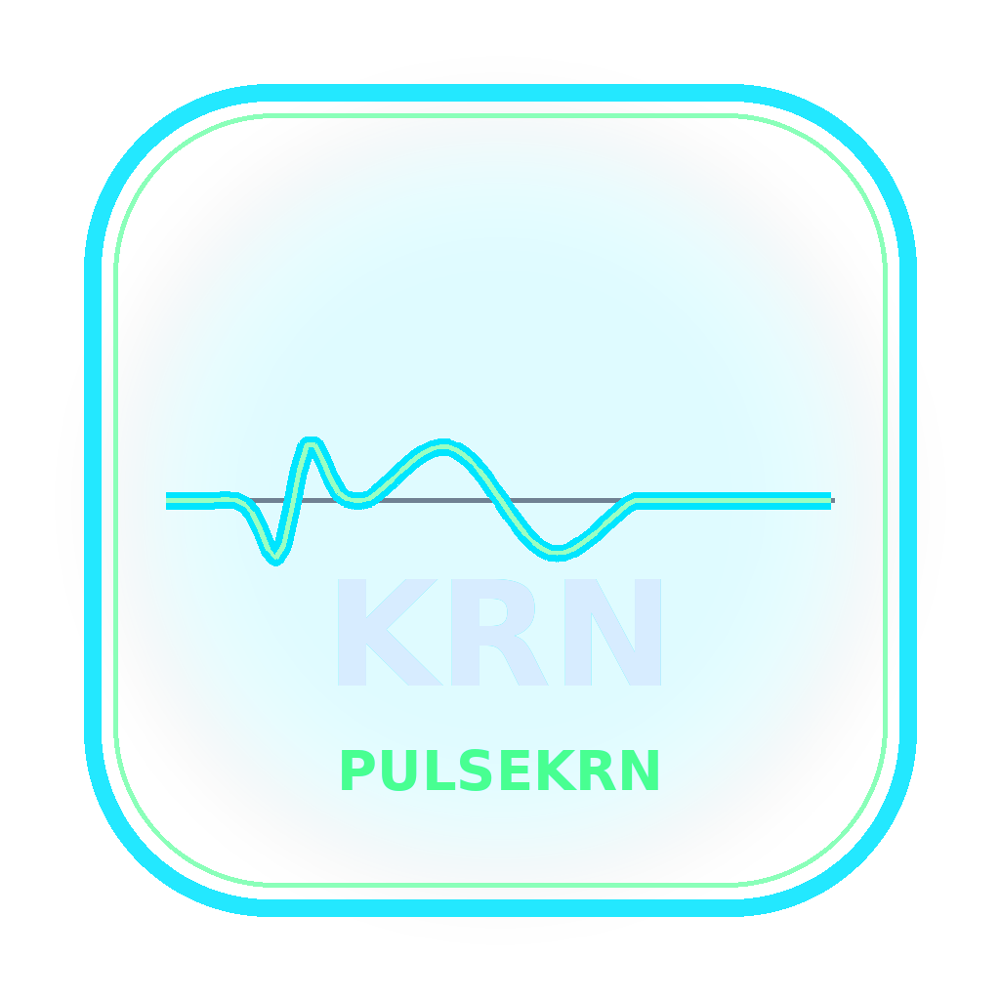

◉
See the pulse
Live system telemetry, resource views, process information, disk space, network connections and system information give you a command-center view of Windows.

This website is a product information and download portal. It does not need access to your Windows machine. Release information and download statistics are loaded from GitHub when available.
No browser permission is requested for system telemetry. PulseKRN itself is a Windows desktop application; the website cannot inspect your PC.
PulseKRN watches the health of your Windows machine, clears the clutter, optimises memory, diagnoses problems and gives you control — without turning your PC into a maze of settings.
PulseKRN was built around one idea: your computer should tell you what is happening, help you fix it, and quietly stay in shape afterwards.
Live system telemetry, resource views, process information, disk space, network connections and system information give you a command-center view of Windows.
Clean temporary clutter, reclaim idle memory, manage startup entries, inspect large files, find duplicates and use Windows repair utilities when something goes wrong.
PulseKRN brings essential Windows health, maintenance, diagnostics and performance tools together in one focused command center.
Central system overview with live resource telemetry, health indicators and quick actions.
Scan and clean temporary files, caches, thumbnail/icon cache, crash and memory dumps, and other supported junk targets.
Inspect programs configured to launch with Windows, disable entries and re-enable them using reversible backups.
Inspect running processes with CPU, memory and thread information, locate executables and safely terminate non-protected processes.
View installed applications and access the app management/uninstall workflow exposed by PulseKRN.
Inspect drives, locate large files and understand where storage is being consumed.
View traffic and connections, inspect local/public IP information, ping hosts and flush DNS with elevation when required.
Find identical files by size and fingerprint, select extra copies and keep at least one copy of each group.
SFC, DISM, disk check, restore point, network reset, high-performance power, battery report, memory diagnostic and security checks.
Background cleanup, RAM optimisation, storage warnings, update checks and optional Windows-startup/background behaviour.
Switch to a high-performance power plan, optionally close configured background apps, free memory and pause auto-pilot until gaming ends.
GitHub-backed release information, announcements, banners, featured notices and secure update installation with SHA-256 verification.
System-level information and diagnostics are exposed inside the desktop command center.
PulseKRN can stay available in the system tray while its background engine keeps working.
Protected Windows processes, elevation prompts, reversible startup changes and verified update packages are part of the design.
The desktop engine runs tracked background jobs, reports progress, shows notifications and pauses the auto-pilot during Game Mode.
Get the latest PulseKRN release, review what’s new, and explore previous versions from one convenient download center.
Checking release channel…
Find the latest PulseKRN release, review what’s new, check download activity and browse the full version history from one convenient download center.
Latest version details, release notes, installer availability and previous releases are kept available through the download center.
PulseKRN uses verified update packages to help ensure that installations are safe and authentic.
The website is a public information and download layer. It does not have access to your Windows telemetry or PulseKRN's local configuration.
Stay informed about new releases, product updates, improvements and important announcements.
Checking for the latest PulseKRN updates.
Version information and release notes are updated automatically.